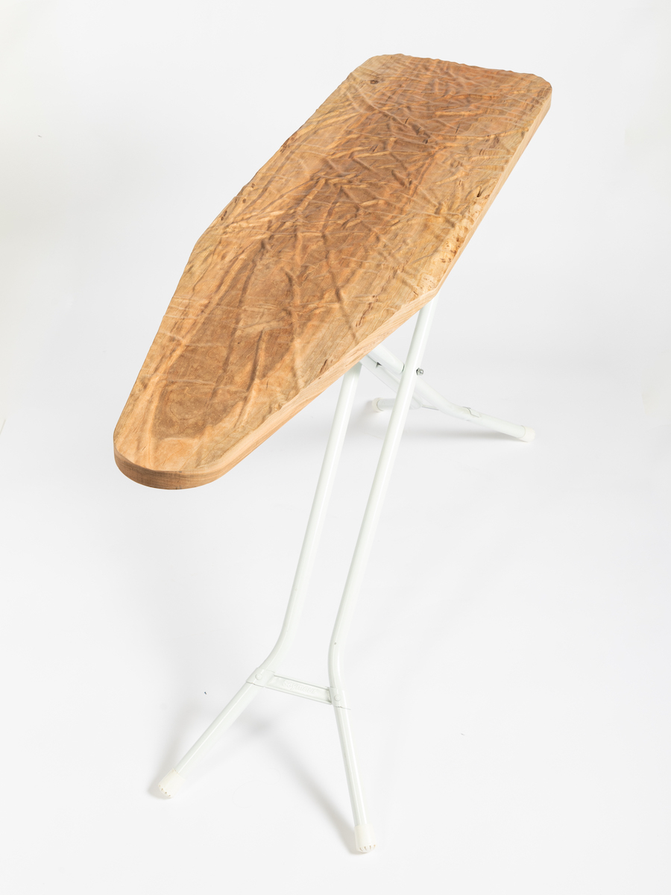

Mixed media. 2023. 48x50x16"
I’m interested in human-made objects, the peculiar ways that we arrange matter to meet our needs. My work is an exploration of the functionality of the objects that we use in our lives, by asking “if I remove the functionality of an everyday object, does it turn into an art object?” I undermine the key purpose of a given object, through material or functional transformation, resulting in something dysfunctional and absurd.
The ‘art object’ is generally regarded as the antithesis of the ‘functional object’; the ‘art object’ is to be looked at but not used. I juxtapose the paradigms of ‘art object’ and ‘functional object’ to find out what lies in between in the blurry no-mans-land. My work distills the aesthetic and function from an object, plays with these two aspects, and recombines them into new forms.
I bring the approach of ‘user-centered-design’ to art. This process, used to design products and software for consumers, is hyper-focused on the experience of the end user: making the product as efficient and convenient as possible. Unlike typical user-centered-design, which iterates on products to create the optimal experience or outcome, I am instead designing for an experience that could be absurd, inefficient, or surprising. When designing, I ask myself “what characteristics or design choices are fundamental to its purpose? What happens when I adjust these variables?” I want to amplify function to the point of futility, to poke fun at the sisyphean/capitalist desire for ever more utility. I create anti-ergonomic objects, I design for a non-user, I am an advocate against convenience.
I’m interested in human-made objects, the peculiar ways that we arrange matter to meet our needs. My work is an exploration of the functionality of the objects that we use in our lives, by asking “if I remove the functionality of an everyday object, does it turn into an art object?” I undermine the key purpose of a given object, through material or functional transformation, resulting in something dysfunctional and absurd.
The ‘art object’ is generally regarded as the antithesis of the ‘functional object’; the ‘art object’ is to be looked at but not used. I juxtapose the paradigms of ‘art object’ and ‘functional object’ to find out what lies in between in the blurry no-mans-land. My work distills the aesthetic and function from an object, plays with these two aspects, and recombines them into new forms.
I bring the approach of ‘user-centered-design’ to art. This process, used to design products and software for consumers, is hyper-focused on the experience of the end user: making the product as efficient and convenient as possible. Unlike typical user-centered-design, which iterates on products to create the optimal experience or outcome, I am instead designing for an experience that could be absurd, inefficient, or surprising. When designing, I ask myself “what characteristics or design choices are fundamental to its purpose? What happens when I adjust these variables?” I want to amplify function to the point of futility, to poke fun at the sisyphean/capitalist desire for ever more utility. I create anti-ergonomic objects, I design for a non-user, I am an advocate against convenience.